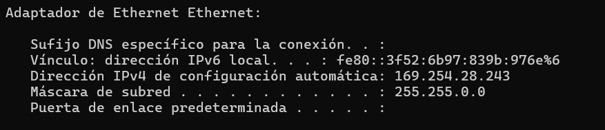
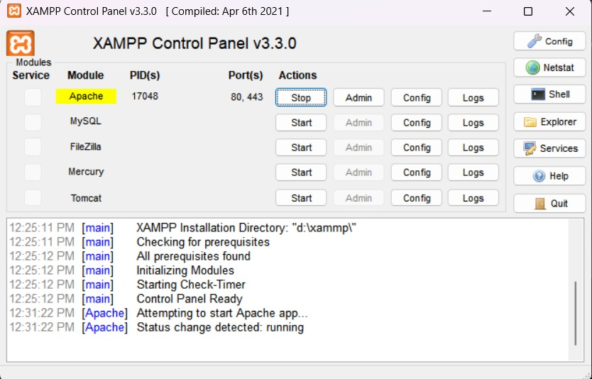
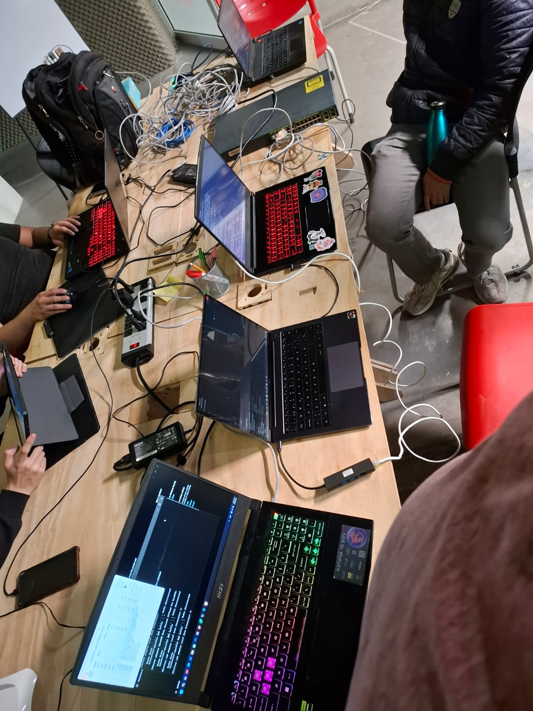
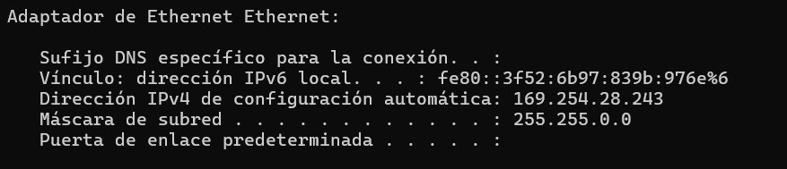
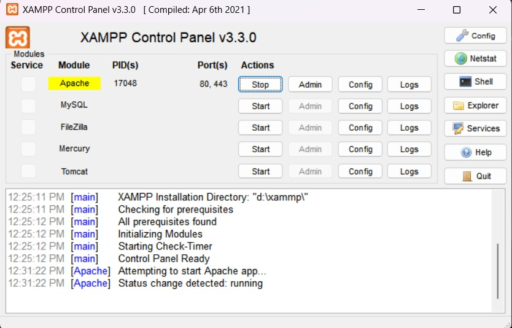
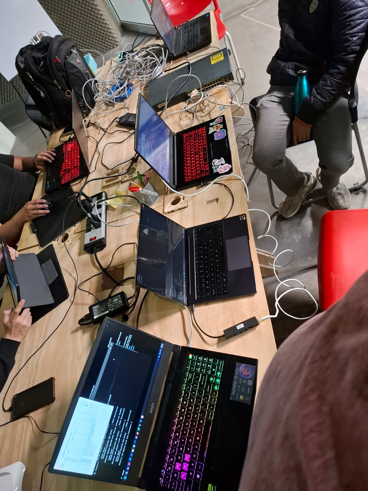
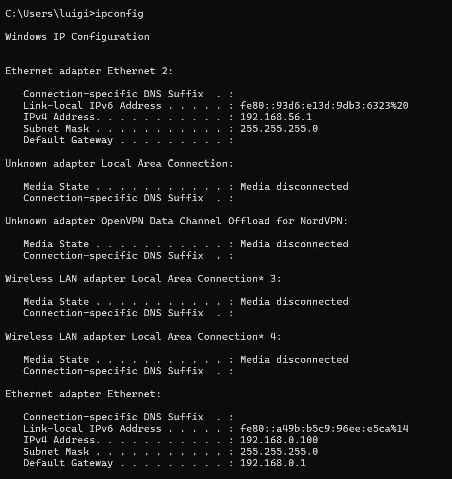
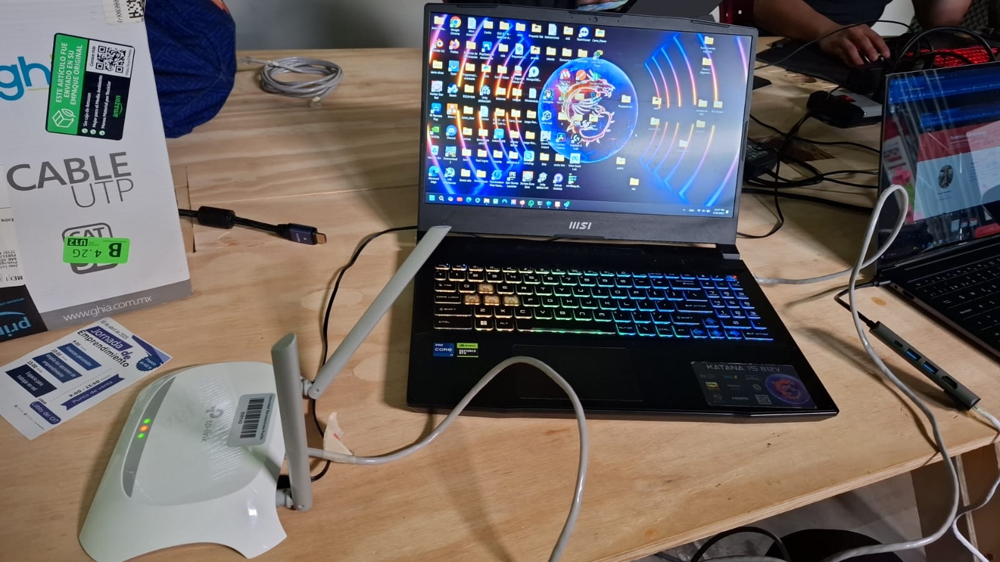
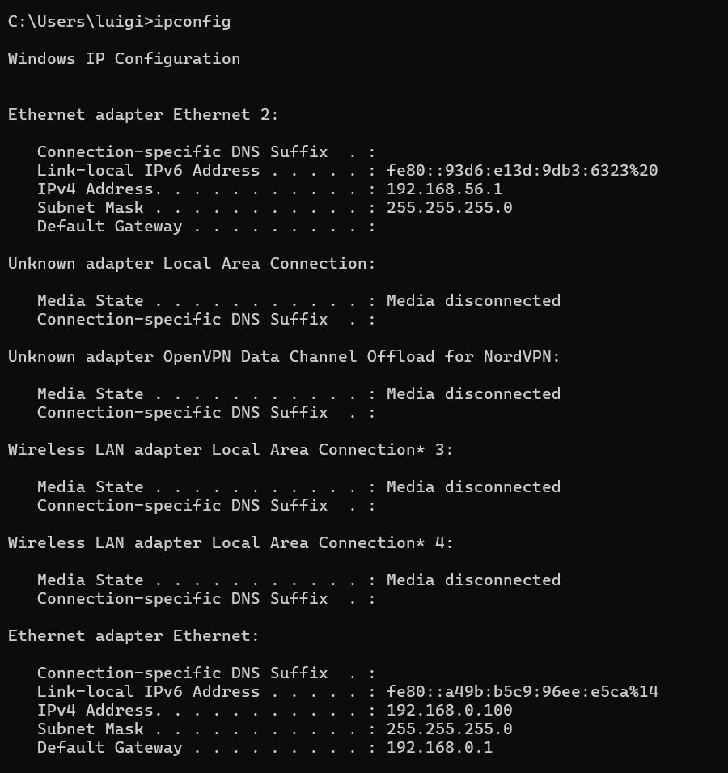
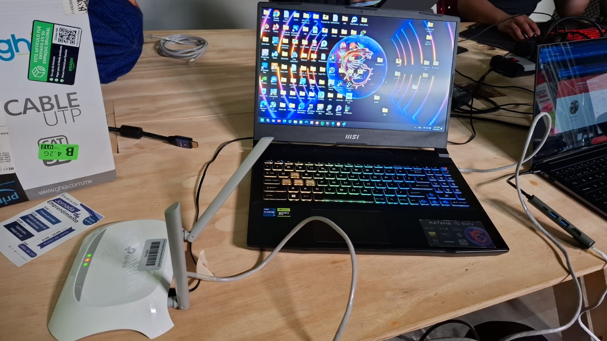

Portafolio de Actividades
Laboratorio de Redes Digitales
Departamento de Ciencias e Ingenierías | Universidad Iberoamericana Puebla, México.
Práctica 7: Redes Locales
- Resumen -
Conocer, identificar y comprobar el funcionamiento de una red de área local utilizando switches y Router.
- Introducción -
En el ámbito de las redes de computadoras, los dispositivos de interconexión como switches y routers desempeñan un papel fundamental para garantizar la comunicación eficiente entre equipos en una red de área local (LAN). Estos dispositivos permiten no solo conectar múltiples computadoras, sino también gestionar el tráfico de datos y facilitar el acceso a recursos compartidos, como servidores web o archivos. En esta práctica de laboratorio, se busca conocer, identificar y comprobar el funcionamiento de una red de área local utilizando switches y routers, analizando su configuración y los protocolos de comunicación implicados. A través de la asignación automática de direcciones IP, la selección del tipo de cable adecuado y la implementación de una arquitectura que incluye un servidor web, se explorará cómo estos componentes interactúan para formar una red funcional. Además, se verificará la conectividad entre dispositivos mediante herramientas como el comando PING y se evaluará el acceso a servicios web dentro de la red.
- Materiales -
- 6 dispositivos inteligentes
- 1 Switch
- 1 Router
- Cables de red directos y cruzados
- 1 Servidor apache
- Desarrollo -
Primero se diseñó la red local a través de un switch. Para ello, se identificó que todos los dispositivos (1 servidor y 3 computadoras) tenían que estar conectados a través de cables directos al switch.
Para comprobar el funcionamiento de la red primero, sí identifico que todos los dispositivos se encontrarán en la misma red a través de las IP y las máscaras de subred con el comando ipconfig en la terminal. A su vez, se comprobó que, a través de pings, el servidor podía realizar comunicaciones a los demás dispositivos. A su vez, se realizaron los pings de una computadora a las demás para poder comprobar las comunicaciones al servidor y las demás computadoras. Se comprobó que todos los dispositivos pudieran acceder a la página web publicada en un servidor Apache a través de la IP del servidor.
Para la segunda red se requirió ocupar el servidor de la primera red, el cual se conecto con cable directo al router. Seguido se conectaron 3 dispositivos móviles a través de una conexión inalámbrica, se comprobó a través de la terminal del servidor que existiera conectividad a los dispositivos mobiles. Para finalizar se demostró que todos los dispositivos pudieron acceder a la página web a través de la ip del servidor.
En la última red a través de un cable directo se conecto el router al switch contectando así el servidor con 3 dispositivos móviles de manera inalámbrica y las 3 computadoras. En este caso las 3 computadoras cambiaron de ip, a través de la terminal del servidor se comprobó la comunicación con los 6 dispositivos. Al final se demostró que todos los dispositivos podían acceder de manera simultanea a la página web a través de la ip del servidor.
- Resultados -
Se mostrarán en forma de carrousel
Resultados de la parte del switch
 





Resultados con el Router
 



Resultados Finales
- Conclusiones -
La realización de esta práctica permitió consolidar los conocimientos teóricos sobre el funcionamiento de switches y routers en una red de área local, así como desarrollar habilidades prácticas en la configuración y verificación de redes. A través de la implementación de dos redes independientes —una utilizando un switch y otra empleando un router—, se logró comprobar la conectividad entre dispositivos mediante el comando PING y el acceso a un servidor web alojado en una de las computadoras. La unión de ambas redes mediante la asignación automática de IP y la selección del tipo de cable adecuado demostró la capacidad de intercambiar archivos y recursos entre diferentes segmentos de red. Estos resultados resaltan la importancia de seleccionar correctamente los dispositivos y configuraciones para garantizar una comunicación eficiente en entornos de red. En conclusión, esta experiencia práctica fortalece la comprensión de los principios fundamentales de las redes de computadoras y proporciona las bases para abordar configuraciones más complejas en futuros escenarios profesionales.
- Referencias -
Small business IT explained in 60 seconds or less: Which switch is which? with captions. (2023, 22 febrero). [Vídeo]. Cisco. Recuperado 30 de abril de 2025, de https://www.cisco.com/c/es_mx/solutions/small-business/resource-center/networking/network-switch-how.html
¿Qué es un router? - Definición y usos. (2021, 18 octubre). Cisco. Recuperado 30 de abril de 2025, de https://www.cisco.com/c/es_mx/solutions/small-business/resource-center/networking/what-is-a-router.html